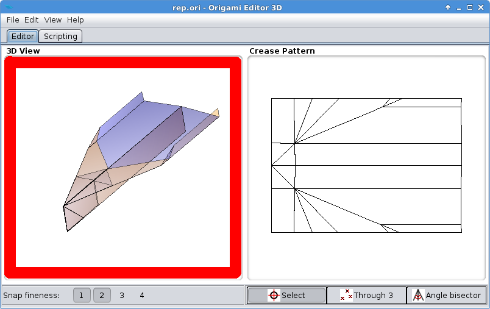

3D View
The first thing in this program you have to get acquainted with is the 3D View. This is where the origami is displayed and edited.

It reacts to four types of mouse action:
- Dragging with the left mouse button will turn the model around.
- Left clicking one or multiple times will switch between the front, top and side views of the model. This is useful for precise editing.
- Right clicking will activate the Ruler.
- Scrolling will zoom in/out on the origami, but only if the View > Zoom on scroll option is enabled.